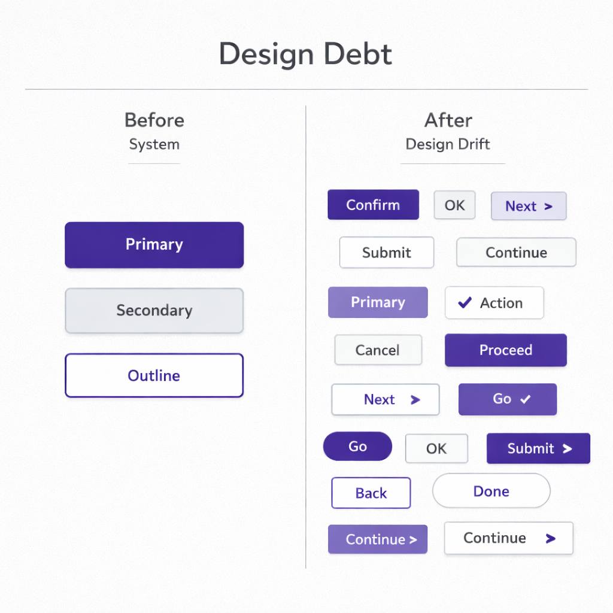

You need to keep your finger on the pulse of your interface design. This is not a phrase for a strategy session; it is a management discipline — a practice without which a product begins to lose trust faster than it can add functionality.
No matter how complex the solution or how deep the architecture, the user sees the screen first. Even in B2B. Even where decisions are made through KPIs and budgets. The first evaluation happens at the interface level.
The visual layer is the entry point to trust. Clean typography, structured hierarchy, aligned components — this is not about aesthetics. It is a signal of order. The logic has not yet been examined, but the structure has already been felt. When there is system on the screen, the product is easier to believe in.
When the grid drifts, components conflict, and states are unclear, a sense of lost control emerges. The functionality may be strong, but trust begins to erode. And trust is an intangible asset of the product.
An interface almost always reflects how the team is organized. Visual chaos rarely exists in isolation: blurred responsibilities, absence of principles, situational decisions. A non-systemic UI is not an aesthetic issue; it is a symptom of organizational instability.
A systematic interface, by contrast, signals the presence of a framework. Standards and predictability. Components function as a library; changes are introduced according to rules. This is no longer a conversation about pixels — it is about operational discipline.
Interface as a Management Indicator
If there is order on the screen, it is a reflection of internal controllability. If there is chaos on the screen, it is almost always the result of a missing framework.
The interface shows whether the product has principles or only situational decisions. Whether there is responsibility for integrity or only for tasks. That is why interface consistency is an indicator of team maturity.
Design System as the Team’s Language
If the interface is the bridge between the system and the user, then the design system is the bridge between teams. It is a protocol: a set of rules and constraints that removes dozens of small decisions every day.
Which button is primary? What spacing is allowed? What do error states look like? What is considered the norm, and what violates the standard?
Without a shared language, every decision is discussed from scratch. Every screen becomes a separate case. The product manager formulates in one context, the designer interprets in another, the developer implements in a third, marketing describes it in a fourth.
The transactional cost of interaction grows. Reviews slow down. Alignment becomes more complex. Scaling speed declines.

A unified visual language reduces variability and accelerates collaboration between teams.
A design system reduces variability where it does not create value. Basic decisions are automated; attention is freed for logic and scenarios. When a team grows from five to fifty people, the absence of a formalized visual language shifts from inconvenience to a measurable loss of velocity.
Design Economics: What It Delivers in Numbers
Suppose a B2B product receives 10,000 visits per month. Conversion to registration is 5%. From registration to payment — 20%. Average annual contract value is $1,000.
The team does not add a new feature; it systematizes the interface. Conversion increases to 6%.
An additional $20,000 per year without traffic growth.
Now retention. 1,000 active customers. Churn — 15%. After simplifying the interface — 12%.
3% × 1,000 × $1,000 = $30,000 in retained revenue.
Support. 5% of customers create tickets monthly: 50 requests × $15 × 12 = $9,000 per year. A 40% reduction means about $3,600 in savings.
The total effect is about $53,600 per year without increasing marketing spend.
At the same time, design is not equal to value. Trends become outdated; visual techniques turn into background noise. If the core need is not solved, polishing the interface will not save the product. Design does not create value out of nothing — it amplifies what already exists. And it can just as easily destroy it.
How Design Debt Accumulates
Technical debt is discussed often. Design debt — less so. The mechanics are the same. Every “we’ll fix it later,” every temporary component, every inconsistent pattern is a liability.
At first, it is almost invisible: different button styles, duplicated elements, unstable states. Then it begins to slow development. New features are harder to integrate because there is no common language. Any change triggers a chain reaction. A redesign turns into an expensive project.
Speed declines, predictability decreases, and the funnel starts to leak.
The Price of Design Debt
A drop in conversion from 5% to 4% is enough to mean minus $20,000 per year. A 2 percentage point increase in churn is another minus $20,000.
Over several years, visual inconsistency materializes into direct financial losses.
Cognitive Mechanics of Interface
At the core of all this is cognitive mechanics.
Clear hierarchy is not a matter of taste; it is a matter of how decision-making works. The more alternatives, the longer the choice and the higher the probability of abandonment. The way information is presented influences the decision no less than the information itself. Working memory is limited.
The user is not lazy. They are constrained.
Every extra interface element, every non-obvious transition consumes cognitive resources. When the resource is depleted, a defensive reaction activates — abandonment.
Design governs the distribution of attention. It determines what will be noticed first, where the user will pause, and where overload will be felt. Clear visual hierarchy reduces entropy and saves cognitive energy. And saving cognitive energy is directly connected to trust: when the interface is understandable, resources can be directed toward the task.
In this context, design is not decoration and not a marketing layer. It is the stability coefficient of the system. It either strengthens the product’s economics or gradually erodes it.
The user sees the screen.
The team works through the system.
The investor looks at the numbers.
All three levels are connected by the degree of interface systematicity.